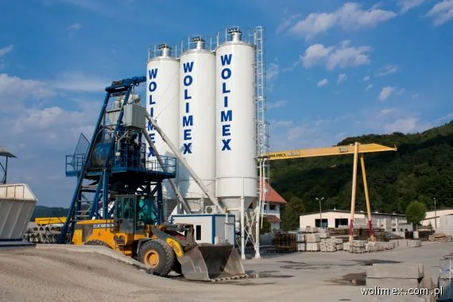

O firmie
Rodzinna firma z Limanowej, która od zakładu rzemieślniczego doszła do kopalni, żwirowni, wytwórni betonu i inwestycji na setki kilometrów sieci.

Słowo od właściciela
Jesteśmy cenieni przede wszystkim jako rzetelny i solidny partner w sektorze robót budowlanych, zwłaszcza sieci wodno-kanalizacyjnych, robót hydrotechnicznych i budowy oczyszczalni ścieków. W tak trudnej branży referencje i zadowolenie Klientów to najlepsza reklama.
Kalendarium
- 1984
Eugeniusz Wojak zakłada zakład rzemieślniczy: rekultywacja terenów, roboty ziemne, wodno-melioracyjne i kanalizacyjne.
- 1989
Firma działa jako HANDROLMEK: dochodzi budownictwo, instalacje sanitarne, wodociągowe i gazowe oraz handel materiałami budowlanymi.
- 1992
Zakup Zakładu Wyrobów Metalowych w Sławkowie i nowa nazwa: WOLIMEX. Budownictwo lądowe i wodne, sieci, oczyszczalnie, hydrotechnika.
- 1993
Drogi i mosty, zagospodarowanie terenu, produkcja betonu i wyrobów betonowych.
- 1997
Nowa siedziba przy ul. Tarnowskiej 33 w Limanowej.
- 2004
Start eksploatacji i przeróbki kruszyw w Charzewicach (koncesja od 2001).
- 2006
Przewierty sterowane, burstlining i inspekcja kanałów.
- 2008
Kopalnia piaskowca w Męcinie.
- 2009
25-lecie firmy.
Certyfikaty
Systemy zarządzania jakością ISO 9001 i środowiskowego ISO 14001. Certyfikat Wiarygodności Biznesowej 2013 oraz profil w Rzetelnej Firmie.
- ISO 9001zarządzanie jakością
- ISO 14001zarządzanie środowiskowe